1084B23 oil pump control return - r r
- Path
- Procedures > 10 ENGINE > 1084 ENGINE LUBRICATION SYSTEM > 1084B engine oil lubrication circuit > 1084B23 oil pump control return - r r
- Kind
- repair procedure (removal / refitting; the operation number is the code)
- Applies to
- engines: 3.2 V6; all production periods
- Interactive page
- https://sloeber94.github.io/elrnDB-a147/en/#/3024993
Applies to: engines: 3.2 V6; all production periods
 Removing
Removing
 Refitting
RefittingPosition the vehicle on the ramp.
Ensure that the ignition key is in the OFF position, then disconnect the negative battery terminal (-).
 | Name | Connector |
|---|---|---|
- | Battery |
Proceed with removal 4450B04 right front wheel r r .
Proceed with removal 7055B64 Engine compartment DUST shield in front wheel arch (one), left or right - R.R. .
Proceed with removal 7055B54 under-engine guard - r r .
Proceed with removal 1092G10 single engine belt r r .
Proceed with removal 1092A10 Crankshaft services PULLEY - R.R. .
Proceed with removal 1032D12 timing system protective cover(s) - r + r .
Proceed with removal 1016A42 left hand cylinder head ignition coil cover - r+r .
Proceed with removal 5510C16 left hand cylinder head ignition coil - r+r .
Proceed with removal 1016A30 left cam cover - r + r and replace gasket .
Proceed with removal 1072B50 sleeves connecting air capacity box to inlet manifold is - r+r .
Proceed with removal 5510C18 right hand cylinder head ignition coil - r+r .
Proceed with removal 1016A34 right-hand cam cover - r + r and replace gasket .
Proceed with removal 1032B10 toothed timing belt - r + r for timing adjustment or replacement .
Proceed with removal 1076B82 left exhasust pipe between catalytic preconverter and converter r r .
Proceed with removal 5510C34 rpm and timing sensor (single) - r+r .
Proceed with removal 1020A20 crank case oil sump - r + r clean seals for sealant application .
1. Undo the bolts (1a) and move the alternator (1b) as required.
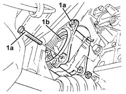
Applies to: engines: 3.2 V6; all production periods
Release the electrical wiring from the bands on the alternator spacer.
1. Undo the bolt fixing the timing belt right rear cover to the alternator spacer.
2. Undo the bolts (2a) and remove the alternator spacer (2b).
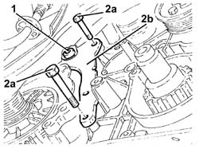
Applies to: engines: 3.2 V6; all production periods
1. Undo the bolt fixing the oil pump idler drive gears and chain to the engine oil pump.
2. Release the oil pump idler drive gears and chain (2a) from the engine oil pump using the tool (2b).
 | Name | Country |
|---|---|---|
2b | Extractor | 1.860.954.001 |
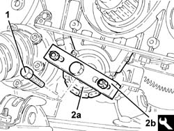
Applies to: engines: 3.2 V6; all production periods
1. Remove the toothed drive pulley.
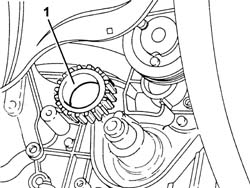
Applies to: engines: 3.2 V6; all production periods
1. Remove the crankshaft key using a suitable drift.
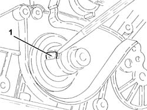
Applies to: engines: 3.2 V6; all production periods
1. Undo the bolts (1a) and remove the crankshaft front oil seal cover (1b) complete with oil seal.
Remove the gasket.
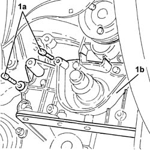
Applies to: engines: 3.2 V6; all production periods
1. Remove the oil pump idler gears and chain.
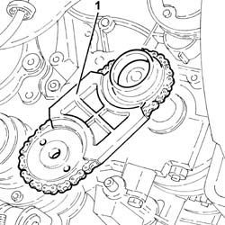
Applies to: engines: 3.2 V6; all production periods
Refitting
RemovingPlace the oil pump drive chain and sprockets back in their housing.
Release the crankshaft front cover oil seal from the housing.
1. Fit the crankshaft front cover (1a), complete with gasket, and fix it tightening the bolts (1b) to the recommended torque.
 | Fastening | Component | Ø | Value (daNm) |
|---|---|---|---|---|
1b | Bolt | CRANKSHAFT FRONT COVER | M6 | (Engine crankcase side) 0.8 ÷ 1.0 |
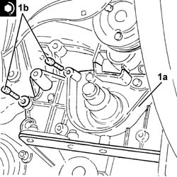
Applies to: engines: 3.2 V6; all production periods
1. Refit a new front crankshaft front cover oil seal (1a) using tool (1b).
| Name | Country |
|---|---|---|
1b | Fitting tool | 1.860.949.000 |
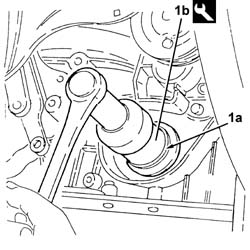
Applies to: engines: 3.2 V6; all production periods
Place the crankshaft key back in its housing.
Place the drive pulley back in its housing.
1. Position the oil pump idler drive gears and chain (1a) on the engine oil pump and fasten it tightening the bolt (1b) to the recommended torque.
| Fastening | Component | Ø | Value (daNm) |
|---|---|---|---|---|
1b | Bolt | ENGINE OIL PUMP DRIVE CHAIN | M10 | (Engine oil pump side) 4.5 ÷ 5.5 |
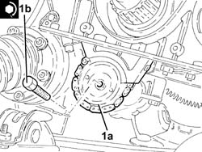
Applies to: engines: 3.2 V6; all production periods
Place the alternator spacer back in its housing and secure it using the bolts.
Tighten the bolt fixing the timing belt right rear cover to the alternator spacer.
Fasten the electrical wiring to the bands on the alternator spacer.
1. Place the alternator (1a) back in its housing and fix it tightening the bolts (1b) to the recommended torque.
| Fastening | Component | Ø | Value (daNm) |
|---|---|---|---|---|
1b | Bolt | ALTERNATOR ASSEMBLY | M8 | (Support side) 2.3 ÷ 2.8 |
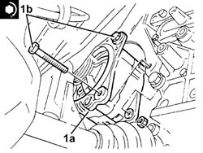
Applies to: engines: 3.2 V6; all production periods
Proceed with refitting 1020A20 crank case oil sump - r + r clean seals for sealant application .
Proceed with refitting 5510C34 rpm and timing sensor (single) - r+r .
Proceed with refitting 1076B82 left exhasust pipe between catalytic preconverter and converter r r .
Proceed with refitting 1032B10 toothed timing belt - r + r for timing adjustment or replacement .
Proceed with refitting 1016A34 right-hand cam cover - r + r and replace gasket .
Proceed with refitting 5510C18 right hand cylinder head ignition coil - r+r .
Proceed with refitting 1072B50 sleeves connecting air capacity box to inlet manifold is - r+r .
Proceed with refitting 1016A30 left cam cover - r + r and replace gasket .
Proceed with refitting 5510C16 left hand cylinder head ignition coil - r+r .
Proceed with refitting 1016A42 left hand cylinder head ignition coil cover - r+r .
Proceed with refitting 1032D12 timing system protective cover(s) - r + r .
Proceed with refitting 1092A10 Crankshaft services PULLEY - R.R. .
Proceed with refitting 1092G10 single engine belt r r .
Proceed with refitting 7055B64 Engine compartment DUST shield in front wheel arch (one), left or right - R.R. .
Proceed with refitting 4450B04 right front wheel r r .
Refill the engine oil lubrication system 0010T11 engine oil check level and top up .
Proceed with refitting 7055B54 under-engine guard - r r .
Connect the negative (-) battery terminal.
Remove the car from the ramps.
Topics linked from this page (18)
- 0010T11 engine oil check level and top up
- 1016A30 left cam cover - r + r and replace gasket
- 1016A34 right-hand cam cover - r + r and replace gasket
- 1016A42 left hand cylinder head ignition coil cover - r+r
- 1020A20 crank case oil sump - r + r clean seals for sealant application
- 1032B10 toothed timing belt - r + r for timing adjustment or replacement
- 1032D12 timing system protective cover(s) - r + r
- 1072B50 sleeves connecting air capacity box to inlet manifold is - r+r
- 1076B82 left exhasust pipe between catalytic preconverter and converter r r
- 1092A10 Crankshaft services PULLEY - R.R.
- 1092G10 single engine belt r r
- 4450B04 right front wheel r r
- 5510C16 left hand cylinder head ignition coil - r+r
- 5510C18 right hand cylinder head ignition coil - r+r
- 5510C34 rpm and timing sensor (single) - r+r
- 7055B54 under-engine guard - r r
- 7055B64 Engine compartment DUST shield in front wheel arch (one), left or right - R.R.
- A1B Battery ( Connectors )